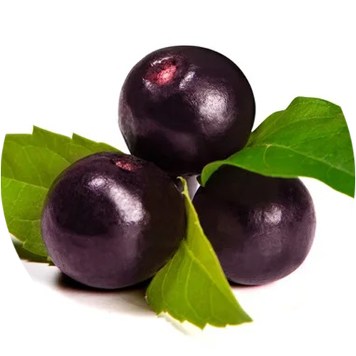
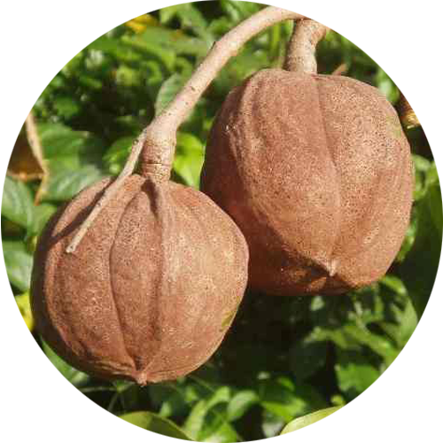
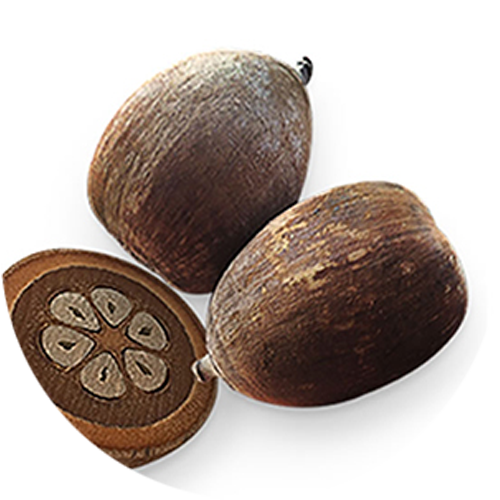
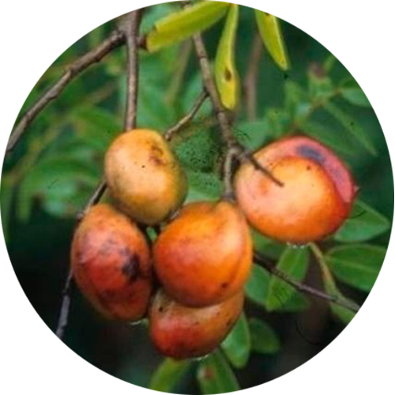
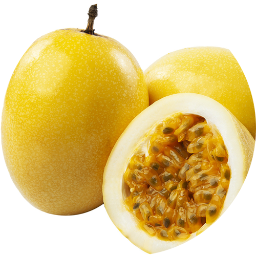
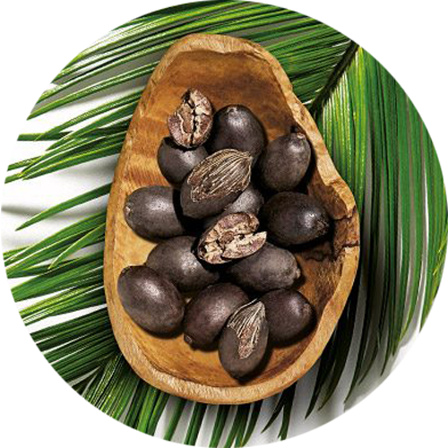

-
Açai
- Euterpe Oleacea
A palmeira de açaí é nativa da várzea da região amazônica. Extraído da polpa do fruto, o óleo vegetal de Açaí traz inúmeros benefícios para a manutenção do equilíbrio da pele e dos cabelos. Nativa da várzea da região Amazônica, seu nome deriva do tupi, "açaí", que significa “fruta que chora” em alusão ao sumo que se desprende de seu fruto.
Possui alto conteúdo de ácido oléico e linoléico, bem como vitamina E, fitoesteróis e antocianina, substância que dá a coloração arroxeada e de forte poder antioxidante.
O óleo vegetal de Açaí auxilia na prevenção contra os sinais de envelhecimento, na prevenção de estrias e hidrata profundamente a pele.
Nos cabelos, nutre e repara os fios danificados, traz brilho intenso, flexibilidade, controle de frizz, confere proteção térmica e facilidade na hora de pentear.
Óleo vegetal de Açaí da Phytoterápica é extra virgem e é extraído por prensagem a frio. É rico em ômega 9, além de conter ômega 6, ácido palmítico, vitaminas A, D e E, e fitoesteróis que previnem os sinais de envelhecimento e processos inflamatórios da pele.
-
Andiroba
- Carapa guianensis
Originário do Norte do Brasil, o óleo vegetal de Andiroba é excelente para hidratação e regeneração da pele e cabelos. Ajuda a prevenir celulite e pode auxiliar no alívio de dores musculares e na redução de inchaços.
É reconhecido popularmente como um repelente natural de insetos, além de ser um ótimo calmante tópico em casos de picadas. Solidifica-se a temperaturas abaixo de 25°C, tornando-se uma gordura esbranquiçada. Aquecido em banho-maria, retorna à sua forma líquida.
O óleo vegetal de Andiroba é extraído das sementes da árvore por prensagem. É excelente hidratante corporal e emoliente para as peles secas.
Nos cabelos promove brilho, sedosidade e auxilia a combater piolhos. Pode ser usado puro ou em sinergia com óleos essenciais.
-
Coco Babaçu
- Orbignya oleifera
Fruto da palmeira nativa do norte do Brasil, o óleo vegetal de Coco Babaçu é extra virgem, rico em ácidos graxos de cadeia saturada como o ácido láurico e caprílico.
A temperatura de oxidação deste óleo vegetal é muito elevada, 180° C, fazendo com que ele não rance facilmente
Possui excelente penetração nos poros da pele. Hidrata e ajuda a prevenir rugas, linhas de expressão e estrias. Pode ser usado puro ou como base para sinergias com óleos essenciais.
O óleo vegetal de Coco Babaçu é excelente para os cuidados dos cabelos, auxilia a proteger os fios dos raios UV, além de revitalizar, nutrir e revigorar. Modela os cachos e protege da poluição ambiental.
Por ser uma gordura vegetal, esse óleo solidifica nas temperaturas abaixo de 24° C, ou seja, se o seu óleo estiver sólido, isso é natural, pois é uma característica dele. Alguns minutos em banho-maria e ele assume o estado líquido novamente.
-
Castanha do Pará
- Bertholletia excelsa
Proveniente da região amazônica, o óleo vegetal de Castanha-do-Pará da Phytoterápica é extra virgem e ajuda a prevenir o envelhecimento precoce da pele, tornando-a mais macia e suave.
O óleo vegetal de Castanha-do-Pará é rico em ômegas 6 e 9, vitaminas A e E, sendo considerado excelente antioxidante. É emoliente e lubrificante, proporciona hidratação profunda e impede a evaporação de água da pele. Por ser antioxidante combate a flacidez, o ressecamento e o envelhecimento da pele. Auxilia na prevenção e atenuação de rugas e estrias.
Ótimo para tratar cabelos secos, hidrata e fortalece, deixando-os sedosos e com brilho. O uso frequente deste óleo intensifica a cor dos cabelos pretos.
-
Copaíba (Bálsamo)
- Copaifera officinalis
Extraído diretamente do tronco da copaibeira, é utilizada há muito tempo pelos índios da Amazônia, que a consideram um "milagre da floresta", atribuindo à ele muitas propriedades curativas.
O bálsamo de Copaíba pode auxiliar em problemas do couro cabeludo como a caspa, aliviando a coceira e irritação.
Na pele é estimulante e emoliente, suavizando e amaciando. Por ser um potente antioxidante, rejuvenescedor e hidratante da pele madura, atua na redução de manchas causadas pelo tempo. É ótimo na prevenção do envelhecimento precoce e na manutenção da elasticidade da pele. Pode ser usado como hidratante e revitalizante em casos de joelhos, cotovelos e pés ressecados.
-
Maracujá
- Passiflora edulis
O maracujá é uma fruta nativa do Brasil, e este detém a maior produção mundial, seu óleo vegetal é prensado a frio das sementes e rico em ômega 6.
O óleo vegetal de Maracujá é um excelente aliado da pele, pois tem o poder de protegê-la contra a perda de água. Além disso, auxilia no equilíbrio da produção sebácea, sendo indicado também para peles oleosas.
Por conta do seu efeito calmante, o óleo vegetal de Maracujá é excelente para uso pós-depilatório, além de evitar pelo encravado. É também um ótimo carreador para os óleos essenciais.
-
Patauá
- Oenocarpus bataua
O patauá é uma palmeira nativa da região amazônica, da família das Arecaceae, desta palmeira é retirado o fruto de onde extrai-se seu precioso óleo vegetal.
Tradicionalmente, o óleo vegetal de Patauá é empregado como tônico fortificante capilar, auxiliando no crescimento dos cabelos. Pode conter até 83% de ômega 9, possuindo propriedades emolientes, hidratantes e revitalizantes tanto para os cabelos quanto para a pele.
O óleo vegetal de Patauá tem propriedades revitalizantes e antioxidantes. Nos cabelos atua como um tônico capilar fortificando os fios e o couro cabeludo, aumenta o brilho e a maciez. Também ajuda na prevenção e no tratamento de caspa e problemas do couro cabeludo.
O óleo vegetal de Patauá é um poderoso antioxidante. Além disso traz muitos benefícios para a pele, deixando-a com a aparência mais jovem e macia.
Na pele, atua como regenerador, revitalizante e impede a desidratação. Apresenta textura leve, deixando a pele com toque seco. É indicado para cabelos secos e quebradiços, pois fortalece, dá brilho e embeleza os fios.